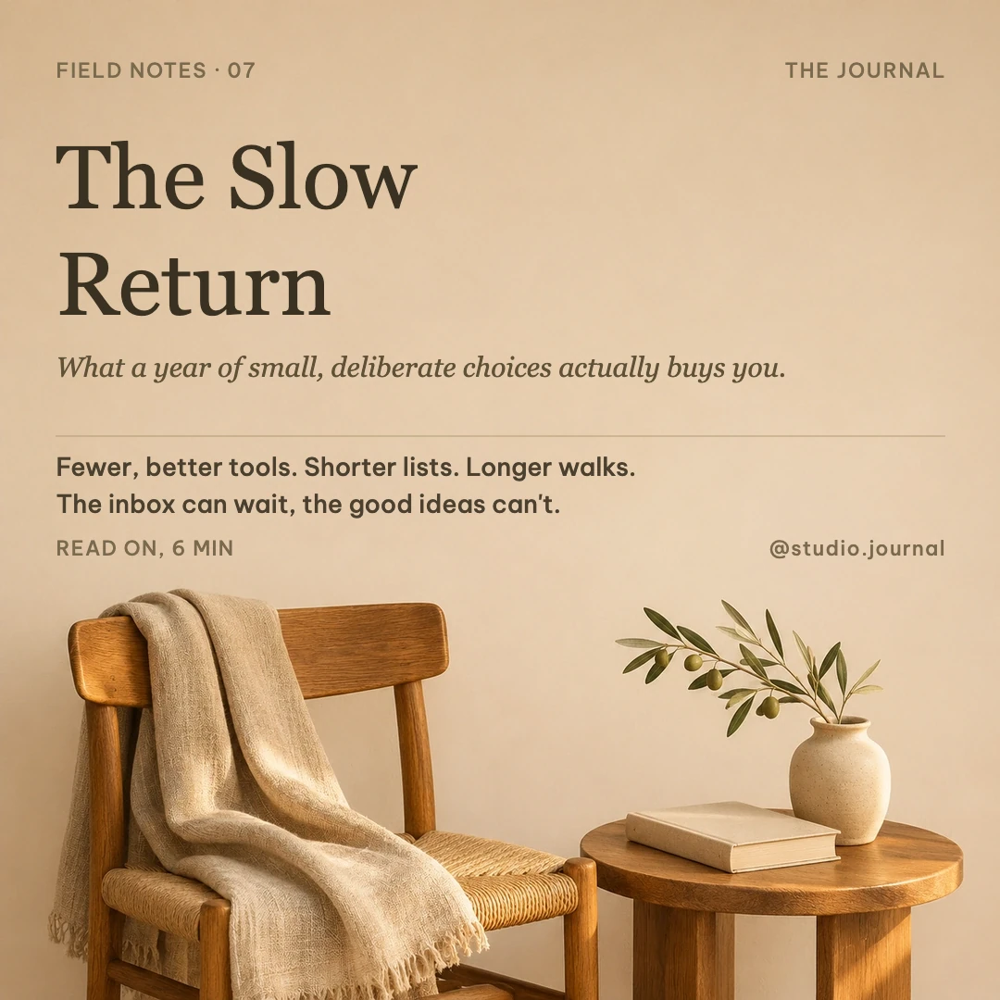
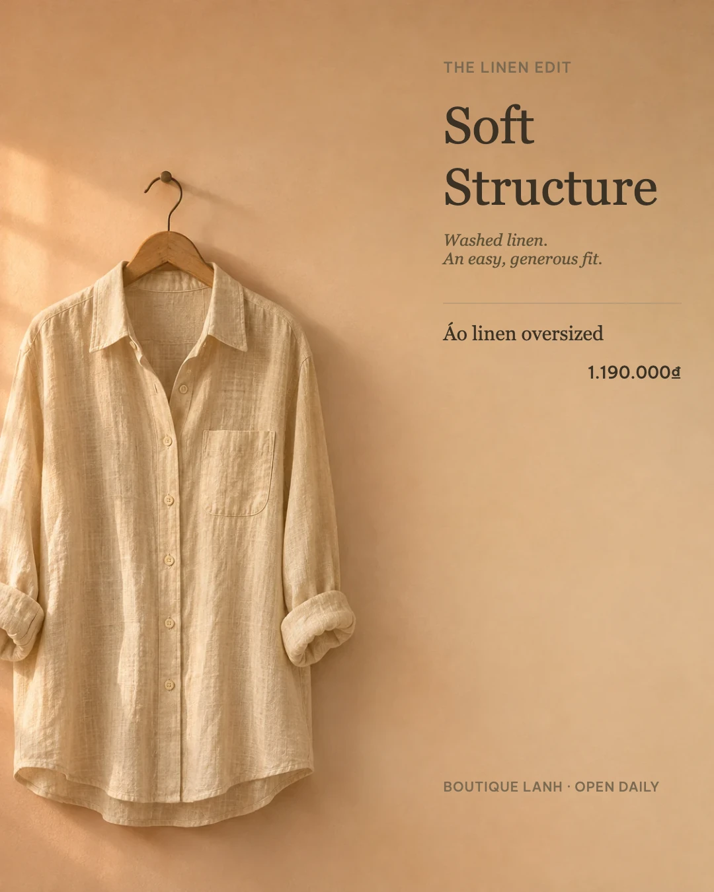
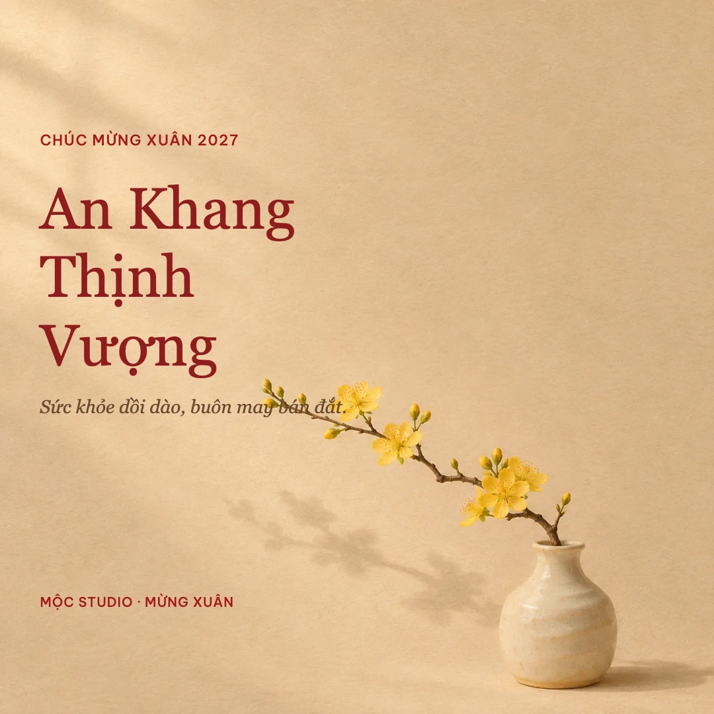

A touch of nature
900 × 1200 · Native text layers · real image artwork
The bundled library · v0.6.1
7 editable social post templates included in Oia v0.6.1. Real scenes, native text layers, no image quota needed to open or edit.
900 × 1200 · Native text layers · real image artwork
1024 × 1536 · Native text layers · real image artwork
1600 × 900 · Native text layers · real image artwork

1080 × 1080 · Native text layers · real image artwork

1080 × 1350 · Native text layers · real image artwork

1080 × 1080 · Native text layers · real image artwork
1080 × 1080 · Native text layers · real image artwork
No. The artwork ships with Oia. Opening a template, changing native text, arranging layers and exporting use no AI quota. Requesting new AI artwork uses your provider quota.
Yes. Each preview is rendered from the bundled scene using the same Fabric canvas engine as the desktop app. The gallery shows complete compositions, not cropped stock photos. Photographic backgrounds are AI-generated; copy remains native text.
Yes. Use Share ▸ Publish as template in the editor to keep a reusable scene in your own library.